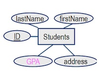
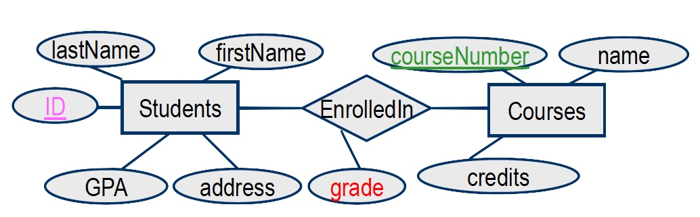
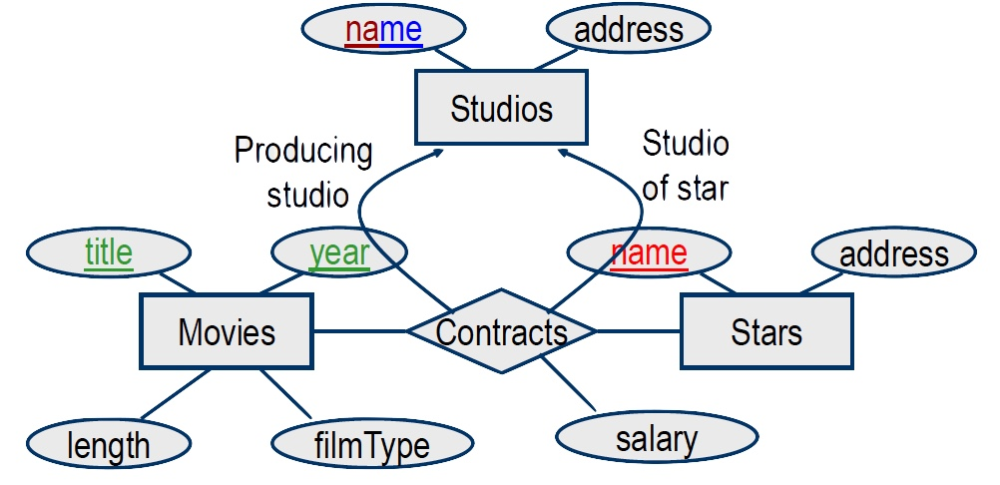
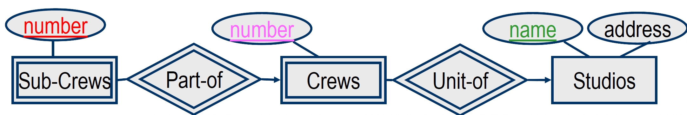
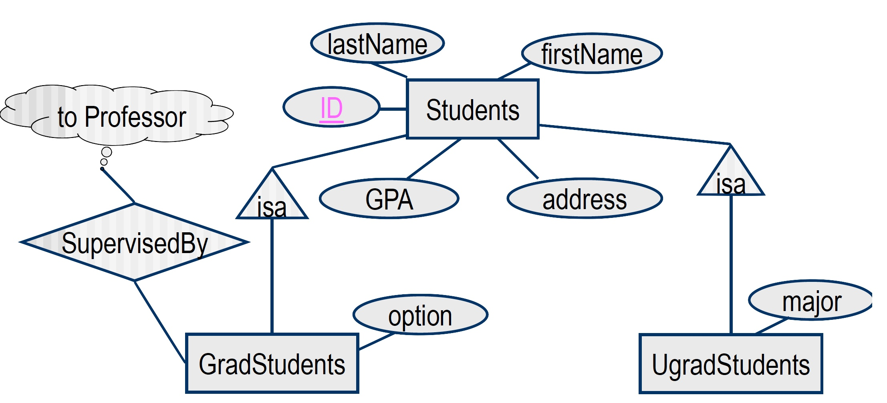

LECTURE 3 - RELATIONAL DATA MODEL
Relational DB:
A set of relations
Relation:
A two-dimensional table in which data is arranged
Relationship Schema:
Ri={A1,…,Am}
Relation name + a set of attribute names + attribute types
Relation instance:
The set of “current” tuples
Database schema:
D={R1,…,Rn}
A set of relation schemas
Database instance:
A collection of relation instances
Logical Database Design
Input = E/R diagram
Output = A relational database schema (a collection of relations )
Converting Entity Sets to Tables:

Schema: Students( ID, firstName, lastName, GPA, address)
Converting Relationships to Tables:
For each relationship set R create a relationship (table) with the same name R.
The set of attributes of this relation includes:
- Key attribute(s) of each entity set involved in the relationship.
- The “explicit” attributes which R may have.

Schema: = Students( ID, courseNumber, grade)
Identifying The Key of Relationship R
If R is a binary relationship between entity sets E1 and E2, then the multiplicity of this relationship determines the key of R:
- If R is M-M, then the keys of E1 and E2 together are “part of” the key of R
- If R is M-1 from E1 to E2, then the key of E1 is part of the key of R
- If R is 1-1, then either E1 or E2 (but not both) is part of the key of R

The primary key of contracts is = (title, year, stars-name, studios-name)
Converting Weak Entity Sets to Tables
- The relation/table W for the weak entity set W, must include all the attributes of W as well as the key attributes of the strong entity sets to which W is associated.
- Any relationship R to which the weak entity set W contributes, must include all the key attributes of W
- i.e., the key attributes of every entity set that contributes to W’’s key
- The weak relationships R, from the weak entity set W to other entity sets that provide the key for W, need not be converted into a separate table
- i.e., double diamonds connecting a weak entity set need not become a separate table.

Schema:
Sub-Crews (number, crewNumber, name)
Studios (name, address)
Converting isa-Hierarchies to Tables
-
Straight-E/R style method
- For each entity set E, create a relation (table) e, and give it attribute(s) A, whenever:
- A belongs to E
- A is the key attribute of the parent(s) relation
-
The object-oriented method
-
The nulls method
- If we are allowed to use NULL as a value in tuples, we can handle a hierarchy of entity sets (classes) with a single relation
- This relation has all the attributes belonging to any entity set (class) of the hierarchy.
- An entity/object is represented by a single tuple that has NULL in each attribute that is not defined for that entity/object.
- ==Supports efficient query processing but is inefficient in space utilization.==
- Queries: allows us to find in a single relation R, every tuple/object from any set involved in the hierarchy
- Queries: Allows us to find all the information about an entity/object in a single tuple in R
- Space Utilization: which is too costly for having repeated and redundant information
- Note: Nulls are not allowed in the relational model theory, but practically, it is supported by commercial DBMS

Straight-E/R Schema:
Students (ID, lastName, firstName, GPA, address )
GradStudents (ID, option )
UgradStudents (ID, major )
SupervisedBy (StudentID, professorID)
NULL Schema:
SupervisedBy (ID, professorID)
Student (ID, lastName, firstName, GPA, address, option, major)